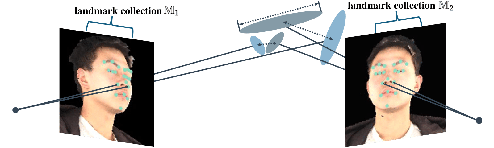

Method Overview
Overview of EVA-Gaussian. EVA-Gaussian takes sparse-view images captured around a human subject as input and performs three key stages: (1) estimating the positions of 3D Gaussians, (2) inferring the remaining attributes (i.e., opacities, scales, quaternions, and features) of these Gaussians, and (3) refining the output image in a recurrent manner
EVA Module

Efficient cross-View Attention (EVA) module for 3D Gaussian position estimation. EVA takes multi-view image features as input, embeds them into window patches using a shifted algorithm, and performs cross-view attention between the features from different views.
Regularization Loss

Attribute regularization. We regularize the opacities and scales of Gaussians, as well as the position mismatches among the Gaussians in the landmark collection. The optimization of position mismatch when it falls below a specific tolerance.
Visualization